サンマルクカフェ(Chcoccro) [官網]
營業時間: 7:00~23:00
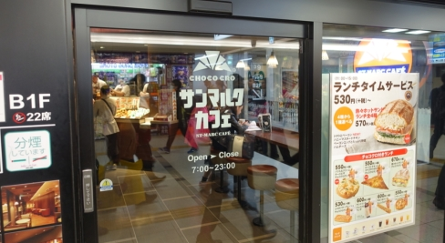
地鐵梅田站下車後往1號出口
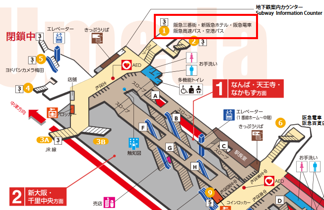
櫃檯前是自助式的麵包區, 夾自己想吃的麵包再去結帳
最有名的巧克力可頌麵包 チョコクロ 170
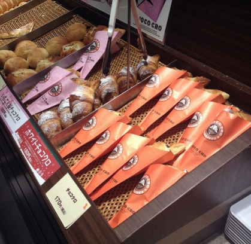
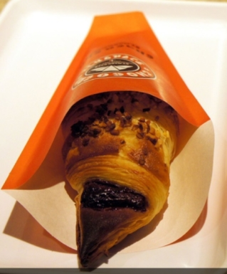
火腿起司三明治 200
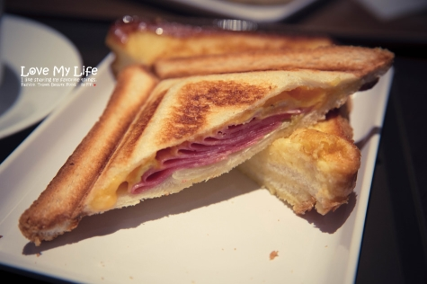
法式乳酪起司 フレンチトースト 210
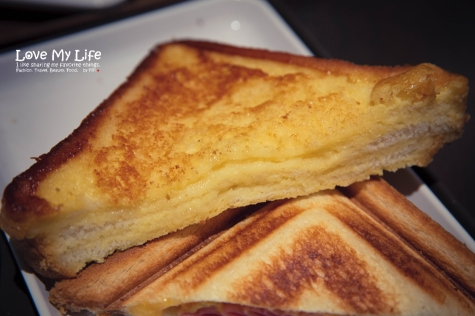
法國土司 できたてフレンチトースト プレーン 490
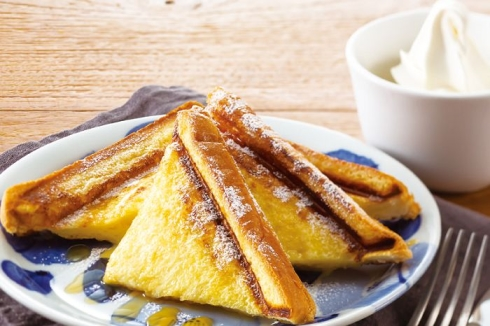
冰咖啡 アイスコーヒー 小200/中250/大300
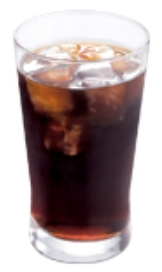
冰拿鐵 アイスカフェラテ 小270/中320
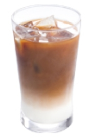
像星冰樂 アイスウィンナーコーヒー 小280/中330/大380
冰紅茶 アイスティー 小210/中310/大360
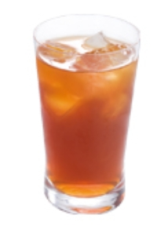
冰奶茶 アイスロイヤルミルクティー 小330/中380/大430
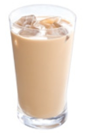
柳橙汁 オレンジ100％ジュース 小300/中350/大400
草莓香蕉冰沙 いちごバナナスムージー 小390/中440/大490
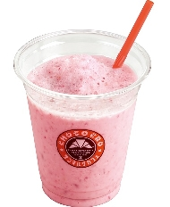
藍莓冰沙 ブルーベリーラッシー 小390/中440/大490
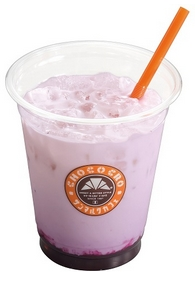
芒果冰沙 マンゴーラッシー 小390/中440/大490
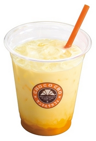